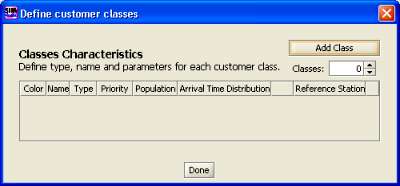
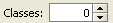
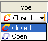
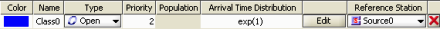
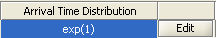
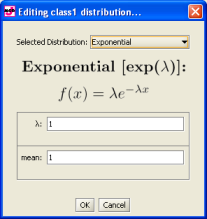
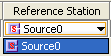
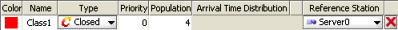
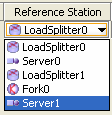

Customers Classes identify different customer behavior and characteristics, such as the type (closed or open), the size of the customer population (for closed classes) or the interarrival time distribution (for open classes).
They can be set from menu "Define" pressing "Customer Classes". The following panel will be shown.

Classes must be explicitly added to the model, either one at a time by clicking the button, or by selecting directly the final number of classes desired in the form. The newly added classes will be listed with deafult parameters.
Double click on the default name (ClassN) to change it.
Each new class has a priority in the system. A smaller number indicates a lower priority. Default value is 0 and it can be changed by double clicking on the corresponding area.
in this pannel you can insert one customer class or multiple customer classes.
After adding a class and possibly changing its name and priority, you must choose the type of customers comprising the class. Classes are created Closed by default, so if you want an Open class, select the type Open in the menu

The class characteristics looks like this now

Open classes describe customer populations that vary during time, therefore they are best characterized by the probability distribution of the interarrival time, rather than by a constant number of customers. The default Interarrival Time Distribution is exp(1) (Exponential Distribution with λ =1).
To change the Interarrival Time Distribution click the Edit button

The following window will appear:
|
 |
Click on the Selected Distribution drop down menu to choose from any of the following distributions: |
In each case, it is possible to configure the distribution parameters as you wish, or use the default values. Parameters that are related among each other are automatically adjusted if one is modified (for example, the figure shows how for an Erlang distribution, if you set the (alfa, r) pair, the (mean, c) pair is automatically adjusted to the correct value).
The Replayer distribution allows you to provide data traces from files.
Click OK when you are done to return to Class parameters definition.
The final step in defining a class is the definition of the Reference Station, i.e., that station in the model with respect to which the performance indices will be computed. You can select it from this menu.  Attention because for Open Classes it is only possible to select one of the Source as a Reference Station.The Reference Station is used to calculate the System Throughput of the class.

Classes are created Closed by default, so there is not need to change the Type. Priority can be changed as in the Open class case. The population size is the parameter that characterizes a Closed class. It is fixed and does not change for the entire life of the system. By default is 1 and it can be changed by clicking on the corresponding area in the class properties matrix.
The final step is to define a Reference Station for the class from the menu . In this case you can select all the other station but not a source not a sink. The Reference Station is used to calculate the System Throughput for this class